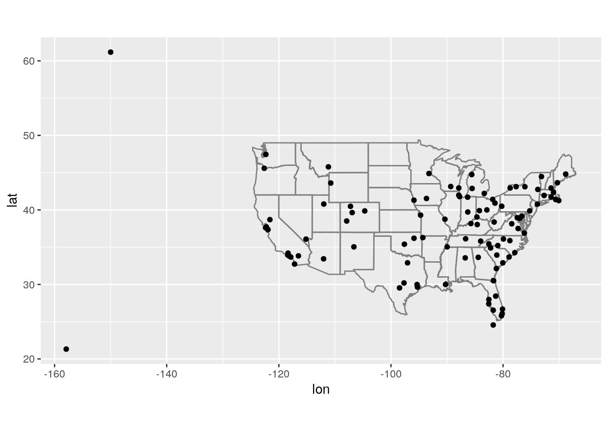
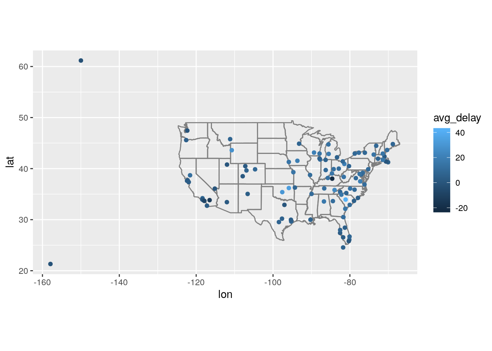
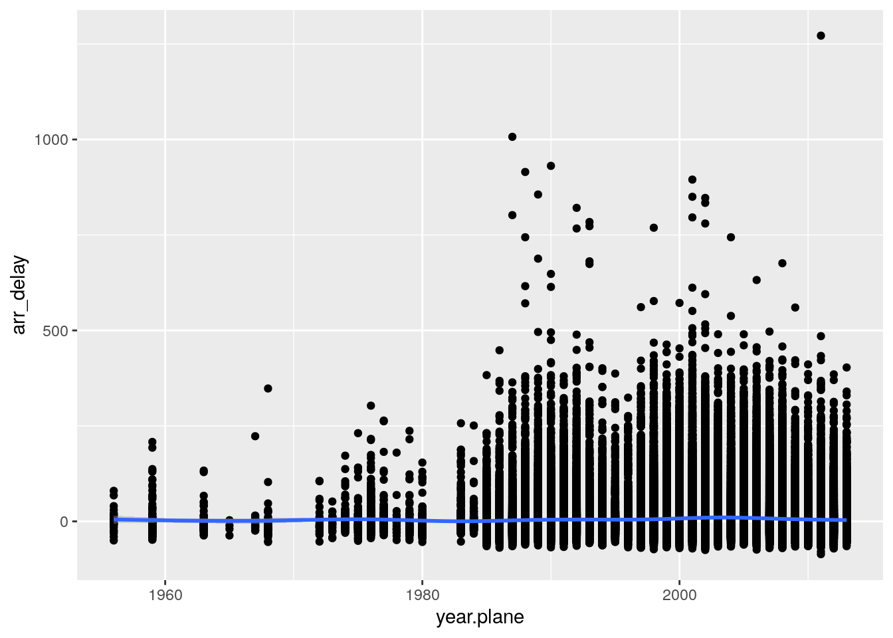
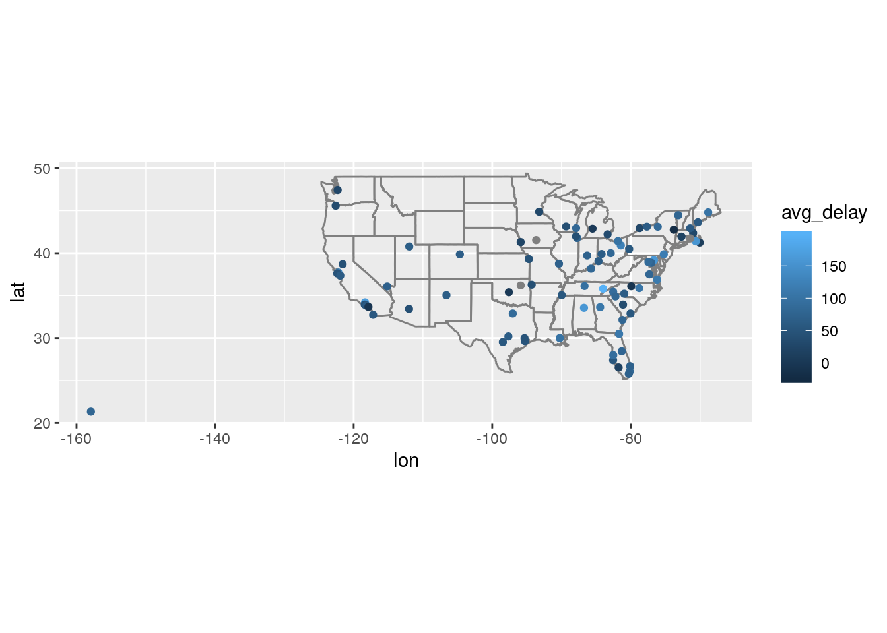

Last updated: 2019-10-15
Checks: 7 0
Knit directory: wflow-r4ds/
This reproducible R Markdown analysis was created with workflowr (version 1.4.0.9001). The Checks tab describes the reproducibility checks that were applied when the results were created. The Past versions tab lists the development history.
Great! Since the R Markdown file has been committed to the Git repository, you know the exact version of the code that produced these results.
Great job! The global environment was empty. Objects defined in the global environment can affect the analysis in your R Markdown file in unknown ways. For reproduciblity it’s best to always run the code in an empty environment.
The command set.seed(20190925) was run prior to running the code in the R Markdown file. Setting a seed ensures that any results that rely on randomness, e.g. subsampling or permutations, are reproducible.
Great job! Recording the operating system, R version, and package versions is critical for reproducibility.
Nice! There were no cached chunks for this analysis, so you can be confident that you successfully produced the results during this run.
Great job! Using relative paths to the files within your workflowr project makes it easier to run your code on other machines.
Great! You are using Git for version control. Tracking code development and connecting the code version to the results is critical for reproducibility. The version displayed above was the version of the Git repository at the time these results were generated.
Note that you need to be careful to ensure that all relevant files for the analysis have been committed to Git prior to generating the results (you can use wflow_publish or wflow_git_commit). workflowr only checks the R Markdown file, but you know if there are other scripts or data files that it depends on. Below is the status of the Git repository when the results were generated:
Ignored files:
Ignored: .Rhistory
Ignored: .Rproj.user/
Note that any generated files, e.g. HTML, png, CSS, etc., are not included in this status report because it is ok for generated content to have uncommitted changes.
These are the previous versions of the R Markdown and HTML files. If you’ve configured a remote Git repository (see ?wflow_git_remote), click on the hyperlinks in the table below to view them.
| File | Version | Author | Date | Message |
|---|---|---|---|---|
| Rmd | d52ec51 | John Blischak | 2019-10-16 | Chapter 10 exercises on relational data with dplyr |
library(tidyverse)
library(nycflights13)
library(Lahman)
library(babynames)
library(nasaweather)
library(fueleconomy)p. 174
I would need the variables origin and dest from flights and would need to combine these with the lat and lon from airports.
weather and airports. What is the relationship and how should it appear in the diagram?The variable origin in weather corresponds to the variable faa in airports.
weather only contains information for the origin (NYC) airports. If it contained weather records for all airports in the USA, what additional relation would it define with flights?It would also define a relation with dest.
I could create a table special that contained the variables name, month, and day for each “special” day of the year. The variables month and day would connect to the variables of the same name in flights and weather.
p. 177
flights.flights %>%
mutate(surrogate = row_number()) %>%
select(surrogate, everything())# A tibble: 336,776 x 20
surrogate year month day dep_time sched_dep_time dep_delay arr_time
<int> <int> <int> <int> <int> <int> <dbl> <int>
1 1 2013 1 1 517 515 2 830
2 2 2013 1 1 533 529 4 850
3 3 2013 1 1 542 540 2 923
4 4 2013 1 1 544 545 -1 1004
5 5 2013 1 1 554 600 -6 812
6 6 2013 1 1 554 558 -4 740
7 7 2013 1 1 555 600 -5 913
8 8 2013 1 1 557 600 -3 709
9 9 2013 1 1 557 600 -3 838
10 10 2013 1 1 558 600 -2 753
# … with 336,766 more rows, and 12 more variables: sched_arr_time <int>,
# arr_delay <dbl>, carrier <chr>, flight <int>, tailnum <chr>,
# origin <chr>, dest <chr>, air_time <dbl>, distance <dbl>, hour <dbl>,
# minute <dbl>, time_hour <dttm>Identify the keys in the following datasets
Lahman::Batting,babynames::babynamesnasaweather::atmosfueleconomy::vehiclesggplot2::diamonds(You might need to install some packages and read some documentation.)
head(Lahman::Batting) playerID yearID stint teamID lgID G AB R H X2B X3B HR RBI SB CS BB
1 abercda01 1871 1 TRO NA 1 4 0 0 0 0 0 0 0 0 0
2 addybo01 1871 1 RC1 NA 25 118 30 32 6 0 0 13 8 1 4
3 allisar01 1871 1 CL1 NA 29 137 28 40 4 5 0 19 3 1 2
4 allisdo01 1871 1 WS3 NA 27 133 28 44 10 2 2 27 1 1 0
5 ansonca01 1871 1 RC1 NA 25 120 29 39 11 3 0 16 6 2 2
6 armstbo01 1871 1 FW1 NA 12 49 9 11 2 1 0 5 0 1 0
SO IBB HBP SH SF GIDP
1 0 NA NA NA NA 0
2 0 NA NA NA NA 0
3 5 NA NA NA NA 1
4 2 NA NA NA NA 0
5 1 NA NA NA NA 0
6 1 NA NA NA NA 0?Lahman::Batting
# playerID, yearID, stint
Lahman::Batting %>%
count(playerID, yearID, stint) %>%
filter(n > 1)# A tibble: 0 x 4
# … with 4 variables: playerID <chr>, yearID <int>, stint <int>, n <int>babynames::babynames# A tibble: 1,924,665 x 5
year sex name n prop
<dbl> <chr> <chr> <int> <dbl>
1 1880 F Mary 7065 0.0724
2 1880 F Anna 2604 0.0267
3 1880 F Emma 2003 0.0205
4 1880 F Elizabeth 1939 0.0199
5 1880 F Minnie 1746 0.0179
6 1880 F Margaret 1578 0.0162
7 1880 F Ida 1472 0.0151
8 1880 F Alice 1414 0.0145
9 1880 F Bertha 1320 0.0135
10 1880 F Sarah 1288 0.0132
# … with 1,924,655 more rows?babynames::babynames
# year, sex, name
babynames::babynames %>%
count(year, sex, name) %>%
filter(n > 1)# A tibble: 0 x 4
# … with 4 variables: year <dbl>, sex <chr>, name <chr>, n <int>nasaweather::atmos# A tibble: 41,472 x 11
lat long year month surftemp temp pressure ozone cloudlow cloudmid
<dbl> <dbl> <int> <int> <dbl> <dbl> <dbl> <dbl> <dbl> <dbl>
1 36.2 -114. 1995 1 273. 272. 835 304 7.5 34.5
2 33.7 -114. 1995 1 280. 282. 940 304 11.5 32.5
3 31.2 -114. 1995 1 285. 285. 960 298 16.5 26
4 28.7 -114. 1995 1 289. 291. 990 276 20.5 14.5
5 26.2 -114. 1995 1 292. 293. 1000 274 26 10.5
6 23.7 -114. 1995 1 294. 294. 1000 264 30 9.5
7 21.2 -114. 1995 1 295 295. 1000 258 29.5 11
8 18.7 -114. 1995 1 298. 297. 1000 252 26.5 17.5
9 16.2 -114. 1995 1 300. 298. 1000 250 27.5 18.5
10 13.7 -114. 1995 1 300. 299. 1000 250 26 16.5
# … with 41,462 more rows, and 1 more variable: cloudhigh <dbl>?nasaweather::atmos
# lat, long, year, month
nasaweather::atmos %>%
count(lat, long, year, month) %>%
filter(n > 1)# A tibble: 0 x 5
# … with 5 variables: lat <dbl>, long <dbl>, year <int>, month <int>,
# n <int>fueleconomy::vehicles# A tibble: 33,442 x 12
id make model year class trans drive cyl displ fuel hwy cty
<int> <chr> <chr> <int> <chr> <chr> <chr> <int> <dbl> <chr> <int> <int>
1 27550 AM Ge… DJ P… 1984 Spec… Auto… 2-Wh… 4 2.5 Regu… 17 18
2 28426 AM Ge… DJ P… 1984 Spec… Auto… 2-Wh… 4 2.5 Regu… 17 18
3 27549 AM Ge… FJ8c… 1984 Spec… Auto… 2-Wh… 6 4.2 Regu… 13 13
4 28425 AM Ge… FJ8c… 1984 Spec… Auto… 2-Wh… 6 4.2 Regu… 13 13
5 1032 AM Ge… Post… 1985 Spec… Auto… Rear… 4 2.5 Regu… 17 16
6 1033 AM Ge… Post… 1985 Spec… Auto… Rear… 6 4.2 Regu… 13 13
7 3347 ASC I… GNX 1987 Mids… Auto… Rear… 6 3.8 Prem… 21 14
8 13309 Acura 2.2C… 1997 Subc… Auto… Fron… 4 2.2 Regu… 26 20
9 13310 Acura 2.2C… 1997 Subc… Manu… Fron… 4 2.2 Regu… 28 22
10 13311 Acura 2.2C… 1997 Subc… Auto… Fron… 6 3 Regu… 26 18
# … with 33,432 more rows?fueleconomy::vehicles
# id
fueleconomy::vehicles %>%
count(id) %>%
filter(n > 1)# A tibble: 0 x 2
# … with 2 variables: id <int>, n <int>ggplot2::diamonds# A tibble: 53,940 x 10
carat cut color clarity depth table price x y z
<dbl> <ord> <ord> <ord> <dbl> <dbl> <int> <dbl> <dbl> <dbl>
1 0.23 Ideal E SI2 61.5 55 326 3.95 3.98 2.43
2 0.21 Premium E SI1 59.8 61 326 3.89 3.84 2.31
3 0.23 Good E VS1 56.9 65 327 4.05 4.07 2.31
4 0.290 Premium I VS2 62.4 58 334 4.2 4.23 2.63
5 0.31 Good J SI2 63.3 58 335 4.34 4.35 2.75
6 0.24 Very Good J VVS2 62.8 57 336 3.94 3.96 2.48
7 0.24 Very Good I VVS1 62.3 57 336 3.95 3.98 2.47
8 0.26 Very Good H SI1 61.9 55 337 4.07 4.11 2.53
9 0.22 Fair E VS2 65.1 61 337 3.87 3.78 2.49
10 0.23 Very Good H VS1 59.4 61 338 4 4.05 2.39
# … with 53,930 more rows?ggplot2::diamonds
# none
ggplot2::diamonds %>%
select_if(is.factor) %>%
count(cut, color, clarity) %>%
filter(n > 1)# A tibble: 271 x 4
cut color clarity n
<ord> <ord> <ord> <int>
1 Fair D I1 4
2 Fair D SI2 56
3 Fair D SI1 58
4 Fair D VS2 25
5 Fair D VS1 5
6 Fair D VVS2 9
7 Fair D VVS1 3
8 Fair D IF 3
9 Fair E I1 9
10 Fair E SI2 78
# … with 261 more rowsDraw a diagram illustrating the connections between the Batting, Master, and Salaries tables in the Lahman package. Draw another diagram that shows the relationship between Master, Managers, AwardsManagers.
How would you characterise the relationship between the Batting, Pitching, and Fielding tables?
p. 186
Compute the average delay by destination, then join on the airports data frame so you can show the spatial distribution of delays. Here’s an easy way to draw a map of the United States:
airports %>%
semi_join(flights, c("faa" = "dest")) %>%
ggplot(aes(lon, lat)) +
borders("state") +
geom_point() +
coord_quickmap()
(Don’t worry if you don’t understand what semi_join() does — you’ll learn about it next.)
You might want to use the size or colour of the points to display the average delay for each airport.
flights %>%
group_by(dest) %>%
summarize(avg_delay = mean(arr_delay, na.rm = TRUE)) %>%
left_join(airports, c("dest" = "faa")) %>%
ggplot(aes(lon, lat)) +
borders("state") +
geom_point(aes(color = avg_delay)) +
coord_quickmap()Warning: Removed 4 rows containing missing values (geom_point).
lat and lon) to flights.flights %>%
left_join(airports, by = c("origin" = "faa")) %>%
left_join(airports, by = c("dest" = "faa"), suffix = c(".origin", ".dest")) %>%
select(contains("origin"), contains("dest"))# A tibble: 336,776 x 16
origin name.origin lat.origin lon.origin alt.origin tz.origin dst.origin
<chr> <chr> <dbl> <dbl> <dbl> <dbl> <chr>
1 EWR Newark Lib… 40.7 -74.2 18 -5 A
2 LGA La Guardia 40.8 -73.9 22 -5 A
3 JFK John F Ken… 40.6 -73.8 13 -5 A
4 JFK John F Ken… 40.6 -73.8 13 -5 A
5 LGA La Guardia 40.8 -73.9 22 -5 A
6 EWR Newark Lib… 40.7 -74.2 18 -5 A
7 EWR Newark Lib… 40.7 -74.2 18 -5 A
8 LGA La Guardia 40.8 -73.9 22 -5 A
9 JFK John F Ken… 40.6 -73.8 13 -5 A
10 LGA La Guardia 40.8 -73.9 22 -5 A
# … with 336,766 more rows, and 9 more variables: tzone.origin <chr>,
# dest <chr>, name.dest <chr>, lat.dest <dbl>, lon.dest <dbl>,
# alt.dest <dbl>, tz.dest <dbl>, dst.dest <chr>, tzone.dest <chr>age_delay <- flights %>%
left_join(planes, by = "tailnum", suffix = c(".flight", ".plane"))
ggplot(age_delay, aes(x = year.plane, y = arr_delay)) +
geom_point() +
geom_smooth()`geom_smooth()` using method = 'gam' and formula 'y ~ s(x, bs = "cs")'Warning: Removed 62923 rows containing non-finite values (stat_smooth).Warning: Removed 62923 rows containing missing values (geom_point).
lm(arr_delay ~ year.plane, data = age_delay)
Call:
lm(formula = arr_delay ~ year.plane, data = age_delay)
Coefficients:
(Intercept) year.plane
-241.146 0.124 flights_weather <- flights %>%
left_join(weather)Joining, by = c("year", "month", "day", "origin", "hour", "time_hour")lm(arr_delay ~ dewp + humid + wind_dir + wind_speed + wind_gust + precip + pressure + visib,
data = flights_weather)
Call:
lm(formula = arr_delay ~ dewp + humid + wind_dir + wind_speed +
wind_gust + precip + pressure + visib, data = flights_weather)
Coefficients:
(Intercept) dewp humid wind_dir wind_speed
312.60168 0.11076 0.16065 -0.01406 -0.11834
wind_gust precip pressure visib
0.39140 -7.99512 -0.28396 -3.29139 weather %>%
filter(year == 2013, month == 6, day == 13)# A tibble: 72 x 15
origin year month day hour temp dewp humid wind_dir wind_speed
<chr> <int> <int> <int> <int> <dbl> <dbl> <dbl> <dbl> <dbl>
1 EWR 2013 6 13 0 68 55.0 63.2 240 4.60
2 EWR 2013 6 13 1 68 54.0 60.8 0 0
3 EWR 2013 6 13 2 66.9 55.9 67.8 160 4.60
4 EWR 2013 6 13 3 64.9 57.0 75.5 220 5.75
5 EWR 2013 6 13 4 66.9 57.0 70.5 0 0
6 EWR 2013 6 13 5 66.9 57.0 70.5 220 4.60
7 EWR 2013 6 13 6 66.9 57.9 72.8 140 3.45
8 EWR 2013 6 13 7 66.9 57.9 72.8 120 6.90
9 EWR 2013 6 13 8 66.9 59 75.7 110 4.60
10 EWR 2013 6 13 9 66.2 61.0 83.8 NA 10.4
# … with 62 more rows, and 5 more variables: wind_gust <dbl>,
# precip <dbl>, pressure <dbl>, visib <dbl>, time_hour <dttm>flights %>%
filter(year == 2013, month == 6, day == 13) %>%
group_by(dest) %>%
summarize(avg_delay = mean(arr_delay, na.rm = TRUE)) %>%
left_join(airports, c("dest" = "faa")) %>%
ggplot(aes(lon, lat)) +
borders("state") +
geom_point(aes(color = avg_delay)) +
coord_quickmap()Warning: Removed 4 rows containing missing values (geom_point).
https://en.wikipedia.org/wiki/June_12%E2%80%9313,_2013_derecho_series
p. 191
tailnum? What do the tail numbers that don’t have a matching record in planes have in common? (Hint: one variable explains ~90% of the problems.)Not sure
flights %>%
anti_join(planes, by = "tailnum")# A tibble: 52,606 x 19
year month day dep_time sched_dep_time dep_delay arr_time
<int> <int> <int> <int> <int> <dbl> <int>
1 2013 1 1 558 600 -2 753
2 2013 1 1 559 600 -1 941
3 2013 1 1 600 600 0 837
4 2013 1 1 602 605 -3 821
5 2013 1 1 608 600 8 807
6 2013 1 1 611 600 11 945
7 2013 1 1 623 610 13 920
8 2013 1 1 624 630 -6 840
9 2013 1 1 628 630 -2 1137
10 2013 1 1 629 630 -1 824
# … with 52,596 more rows, and 12 more variables: sched_arr_time <int>,
# arr_delay <dbl>, carrier <chr>, flight <int>, tailnum <chr>,
# origin <chr>, dest <chr>, air_time <dbl>, distance <dbl>, hour <dbl>,
# minute <dbl>, time_hour <dttm>flights %>%
anti_join(planes, by = "tailnum") %>%
filter(nchar(tailnum) == 6)# A tibble: 50,094 x 19
year month day dep_time sched_dep_time dep_delay arr_time
<int> <int> <int> <int> <int> <dbl> <int>
1 2013 1 1 558 600 -2 753
2 2013 1 1 559 600 -1 941
3 2013 1 1 600 600 0 837
4 2013 1 1 602 605 -3 821
5 2013 1 1 608 600 8 807
6 2013 1 1 611 600 11 945
7 2013 1 1 623 610 13 920
8 2013 1 1 624 630 -6 840
9 2013 1 1 628 630 -2 1137
10 2013 1 1 629 630 -1 824
# … with 50,084 more rows, and 12 more variables: sched_arr_time <int>,
# arr_delay <dbl>, carrier <chr>, flight <int>, tailnum <chr>,
# origin <chr>, dest <chr>, air_time <dbl>, distance <dbl>, hour <dbl>,
# minute <dbl>, time_hour <dttm>flights %>%
semi_join(planes, by = "tailnum") %>%
filter(nchar(tailnum) == 5)# A tibble: 1,597 x 19
year month day dep_time sched_dep_time dep_delay arr_time
<int> <int> <int> <int> <int> <dbl> <int>
1 2013 1 1 1621 1548 33 1904
2 2013 1 2 729 730 -1 1011
3 2013 1 2 1902 1905 -3 2203
4 2013 1 3 1058 1100 -2 1346
5 2013 1 3 1123 1125 -2 1603
6 2013 1 3 1604 1600 4 1917
7 2013 1 3 1700 1700 0 2141
8 2013 1 3 1920 1920 0 2158
9 2013 1 3 1928 1835 53 2220
10 2013 1 4 1055 1100 -5 1350
# … with 1,587 more rows, and 12 more variables: sched_arr_time <int>,
# arr_delay <dbl>, carrier <chr>, flight <int>, tailnum <chr>,
# origin <chr>, dest <chr>, air_time <dbl>, distance <dbl>, hour <dbl>,
# minute <dbl>, time_hour <dttm>planes_at_least_100 <- flights %>%
group_by(tailnum) %>%
summarize(n_flights = n()) %>%
filter(n_flights >= 100)
flights_at_least_100 <- flights %>%
semi_join(planes_at_least_100, by = "tailnum")
dim(flights_at_least_100)[1] 230902 19fueleconomy::vehicles and fueleconomy::common to find only the records for the most common models.fueleconomy::vehicles %>%
semi_join(fueleconomy::common)Warning: Detecting old grouped_df format, replacing `vars` attribute by
`groups`Joining, by = c("make", "model")# A tibble: 14,531 x 12
id make model year class trans drive cyl displ fuel hwy cty
<int> <chr> <chr> <int> <chr> <chr> <chr> <int> <dbl> <chr> <int> <int>
1 1833 Acura Integ… 1986 Subc… Auto… Fron… 4 1.6 Regu… 28 22
2 1834 Acura Integ… 1986 Subc… Manu… Fron… 4 1.6 Regu… 28 23
3 3037 Acura Integ… 1987 Subc… Auto… Fron… 4 1.6 Regu… 28 22
4 3038 Acura Integ… 1987 Subc… Manu… Fron… 4 1.6 Regu… 28 23
5 4183 Acura Integ… 1988 Subc… Auto… Fron… 4 1.6 Regu… 27 22
6 4184 Acura Integ… 1988 Subc… Manu… Fron… 4 1.6 Regu… 28 23
7 5303 Acura Integ… 1989 Subc… Auto… Fron… 4 1.6 Regu… 27 22
8 5304 Acura Integ… 1989 Subc… Manu… Fron… 4 1.6 Regu… 28 23
9 6442 Acura Integ… 1990 Subc… Auto… Fron… 4 1.8 Regu… 24 20
10 6443 Acura Integ… 1990 Subc… Manu… Fron… 4 1.8 Regu… 26 21
# … with 14,521 more rowsFind the 48 hours (over the course of the whole year) that have the worst delays. Cross-reference it with the weather data. Can you see any patterns?
What does anti_join(flights, airports, by = c("dest" = "faa")) tell you? What does anti_join(airports, flights, by = c("faa" = "dest")) tell you?
anti_join(flights, airports, by = c("dest" = "faa")) tells you the flights with a destination that isn’t recorded in airports.
anti_join(flights, airports, by = c("dest" = "faa"))# A tibble: 7,602 x 19
year month day dep_time sched_dep_time dep_delay arr_time
<int> <int> <int> <int> <int> <dbl> <int>
1 2013 1 1 544 545 -1 1004
2 2013 1 1 615 615 0 1039
3 2013 1 1 628 630 -2 1137
4 2013 1 1 701 700 1 1123
5 2013 1 1 711 715 -4 1151
6 2013 1 1 820 820 0 1254
7 2013 1 1 820 820 0 1249
8 2013 1 1 840 845 -5 1311
9 2013 1 1 909 810 59 1331
10 2013 1 1 913 918 -5 1346
# … with 7,592 more rows, and 12 more variables: sched_arr_time <int>,
# arr_delay <dbl>, carrier <chr>, flight <int>, tailnum <chr>,
# origin <chr>, dest <chr>, air_time <dbl>, distance <dbl>, hour <dbl>,
# minute <dbl>, time_hour <dttm>anti_join(airports, flights, by = c("faa" = "dest")) tells you the airports that were not flown to directly from NYC airports.
flights %>%
group_by(tailnum) %>%
summarize(n_airlines = n_distinct(carrier)) %>%
filter(n_airlines != 1)# A tibble: 18 x 2
tailnum n_airlines
<chr> <int>
1 N146PQ 2
2 N153PQ 2
3 N176PQ 2
4 N181PQ 2
5 N197PQ 2
6 N200PQ 2
7 N228PQ 2
8 N232PQ 2
9 N933AT 2
10 N935AT 2
11 N977AT 2
12 N978AT 2
13 N979AT 2
14 N981AT 2
15 N989AT 2
16 N990AT 2
17 N994AT 2
18 <NA> 7
sessionInfo()R version 3.6.1 (2019-07-05)
Platform: x86_64-pc-linux-gnu (64-bit)
Running under: Ubuntu 18.04.3 LTS
Matrix products: default
BLAS: /usr/lib/x86_64-linux-gnu/atlas/libblas.so.3.10.3
LAPACK: /usr/lib/x86_64-linux-gnu/atlas/liblapack.so.3.10.3
locale:
[1] LC_CTYPE=en_US.UTF-8 LC_NUMERIC=C
[3] LC_TIME=en_US.UTF-8 LC_COLLATE=en_US.UTF-8
[5] LC_MONETARY=en_US.UTF-8 LC_MESSAGES=en_US.UTF-8
[7] LC_PAPER=en_US.UTF-8 LC_NAME=C
[9] LC_ADDRESS=C LC_TELEPHONE=C
[11] LC_MEASUREMENT=en_US.UTF-8 LC_IDENTIFICATION=C
attached base packages:
[1] stats graphics grDevices utils datasets methods base
other attached packages:
[1] fueleconomy_0.1 nasaweather_0.1 babynames_1.0.0
[4] Lahman_7.0-1 nycflights13_1.0.1 forcats_0.4.0
[7] stringr_1.4.0 dplyr_0.8.3 purrr_0.3.2
[10] readr_1.3.1 tidyr_1.0.0 tibble_2.1.3
[13] ggplot2_3.2.1 tidyverse_1.2.1
loaded via a namespace (and not attached):
[1] tidyselect_0.2.5 xfun_0.10 splines_3.6.1
[4] haven_2.1.1 lattice_0.20-38 colorspace_1.4-1
[7] vctrs_0.2.0 generics_0.0.2 htmltools_0.4.0
[10] mgcv_1.8-29 yaml_2.2.0 utf8_1.1.4
[13] rlang_0.4.0 pillar_1.4.2 glue_1.3.1
[16] withr_2.1.2 modelr_0.1.5 readxl_1.3.1
[19] lifecycle_0.1.0 munsell_0.5.0 gtable_0.3.0
[22] workflowr_1.4.0.9001 cellranger_1.1.0 rvest_0.3.4
[25] evaluate_0.14 labeling_0.3 knitr_1.25
[28] fansi_0.4.0 broom_0.5.2 Rcpp_1.0.2
[31] scales_1.0.0 backports_1.1.5 jsonlite_1.6
[34] fs_1.3.1 hms_0.5.1 digest_0.6.21
[37] stringi_1.4.3 grid_3.6.1 rprojroot_1.2
[40] cli_1.1.0 tools_3.6.1 maps_3.3.0
[43] magrittr_1.5 lazyeval_0.2.2 crayon_1.3.4
[46] whisker_0.4 pkgconfig_2.0.3 zeallot_0.1.0
[49] Matrix_1.2-17 xml2_1.2.2 lubridate_1.7.4
[52] assertthat_0.2.1 rmarkdown_1.15 httr_1.4.1
[55] rstudioapi_0.10 R6_2.4.0 nlme_3.1-141
[58] git2r_0.26.1.9000 compiler_3.6.1